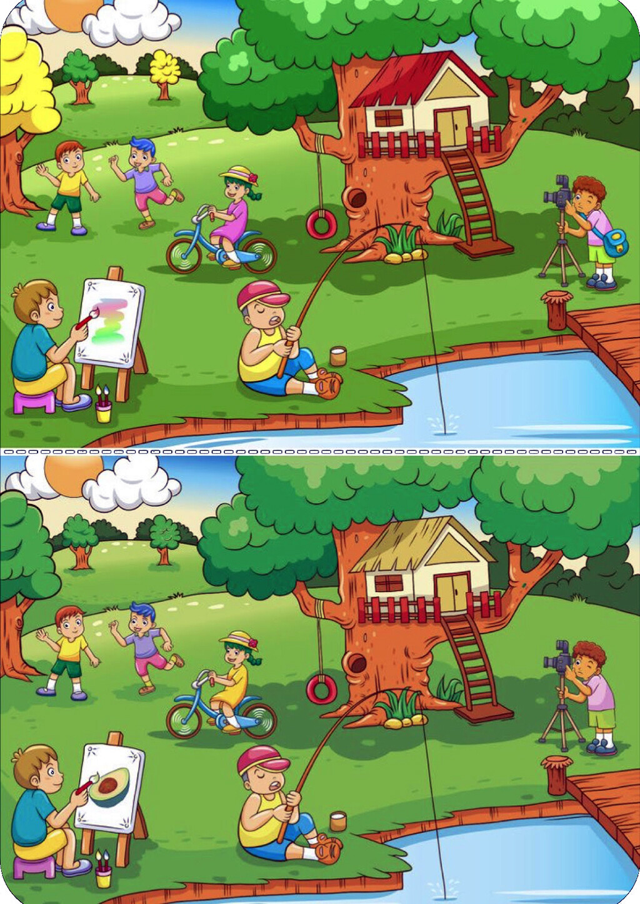
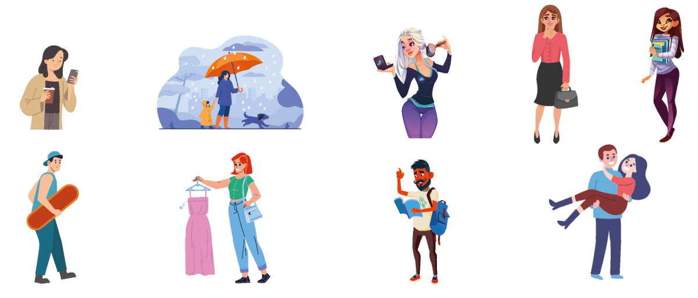

Akuzativ (4. pád) - koho? co?
Accusative case - who? what?
Download the file - Systém pádů.
Nominativ - kdo? co?
A case in which no change occurs.
Example: Mom is lying down, the book is standing, the cat is running.
Genitiv — koho? čeho?
Prepositions:
bez - without. Example: bez přítele - without a friend
u - near, by. Example: Dům stojí u jezera. — The house is located by the lake.
z - from. Example: Jsem z Prahy. — I'm from Prague.
od - from. Example: od kamarada - from a friend
do - in, before. Example: do školy - to school
vedle - near, around (very close, right next to each other). Example: Dům stojí vedle jezera. — The house is located near the lake.
blízko - near, nearby (not far, but not right next to each other). Example: blízko domu - near the house
kolem - around, past. Example: kolem města - around / past the city
Dativ — komu? čemu?
Prepositions:
k - k. Example: Petr je k Evě hodný, ale ke Kláře ne. - Peter is kind to Eve, but not to Clara.
diky - thanks.
kvůli - because of. Example: Dělám to kvůli tobě. - I'm doing this for you.
proti - against. Example: Ty jsi vždycky proti mně. - You are always against me.
naproti - opposite.
Akuzativ - koho? co?
Prepositions:
na - on. Example: Dej knihu na polici. — Put the book on the shelf.
pro - for, for, because of. Example: Pro tebe - for you
za - behind, behind, on. Example: Lístek je za deset korun - ticket for ten crowns
o - about, on, with, in.
Vokativ
The vocative case is used only in constructions that involve addressing someone or mentioning/pointing to something.
Lokál - (o) kom? (o) čem?
Prepositions:
na - on. Example: Kniha je na polici. — The book is on the shelf.
o - o. Example: Mluvíme o Petrovi. — We are talking about Peter
po - after. Example: Po večeři vždy chodíme na procházku. — After dinner we always go for a walk
v - v. Example: v zásuvce - in a socket
při - at.
Instrumentál — kým? čím?
Prepositions:
s - with. Example: Jsem s tebou. - I'm with you
mezi - between. Example: číst mezi řádky - read between the lines
před - before. Example: Sejdeme se před divadlem. - Meet me in front of the theater.
nad - above. Example: Nad náměstím létají ptáci. — Birds fly over the square.
pod - under. Example: Pod stolem spí pes. — The dog is sleeping under the table.
za - for. Example: Stojím za tebou. - I'm standing behind you.
Mž - Masculinum animate
1. UčiTEL
2. MuŽ and endings such as -ž, -š, -č, -ř, -ď, -ť, -ň, -c, -j
3. PředsedA
4. SoudcE
5. Pán
Example:
herec, prodavač, kluk, kamarád, bankéř, turista
Mn - Masculinum inanimate
1. Hrad
2. Stroj and endings such as -ž, -š, -č, -ř, -ď, -ť, -ň, -c, -j
Example: rybník, příběh, čaj, utopenec
Ž - Femininum
1. ŽenA (ending with A)
2. PíseŇ and endings such as -ž, -š, -č, -ř, -ď, -ť, -ň, -c, -j
3. RůžE
4. RadOST
S - Neutrum
1. MěstO
2. MořE
3. NáměstÍ
AKUZATIV
Download the file - Declension Akuzativ.
Examples:
Na koho myslíš/íte?
Na co myslíš/íte?
Na co se těšíš/íte?
Na koho se těšíte?
Na co se díváš?
Na koho se díváš?
Na co čekáš/áte?
Na koho čekáš/áte?
O koho se staráš/áte?
O co se staráš?
O co se zajímáš/áte?
O koho se zajímáte?
Mž - Masculinum animate
ten — vidím TOHO
ruský — vidím ruskÉHO
herec — vidím hercE
jeden — mám jednOHO
nový — mám novÉHO
prodavač — mám prodavačE
inteligentní — slyším inteligentnÍHO
ekolog — slyším ekologA
můj kolega — znáš mÉHO kolegU
ten učitel — znáš tOHO učitelE
Mn - Masculinum inanimate
vidím tvůj telefon
S - Neutrum
vidím nové okno
Ž - Femininum
vysoká — vidím vysokOU
hora — vidím horU
ta malá — tu malOU
vesnice — vesnicI
moje starší kacelář — chceš mojI staršÍ kancelář
velká kost — mám velkOU kost
Přeju — I wish
- šťastnou cestu - happy journey
- všechno nejlepší - all the best
- dobrou chuť - bon appetit
- dobrou noc - good night
Complete tasks 1 to 10



Vidíte na obrázku:
Next unit